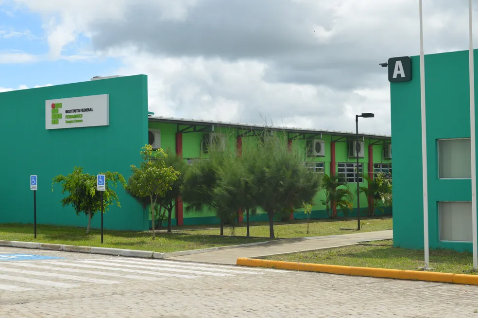
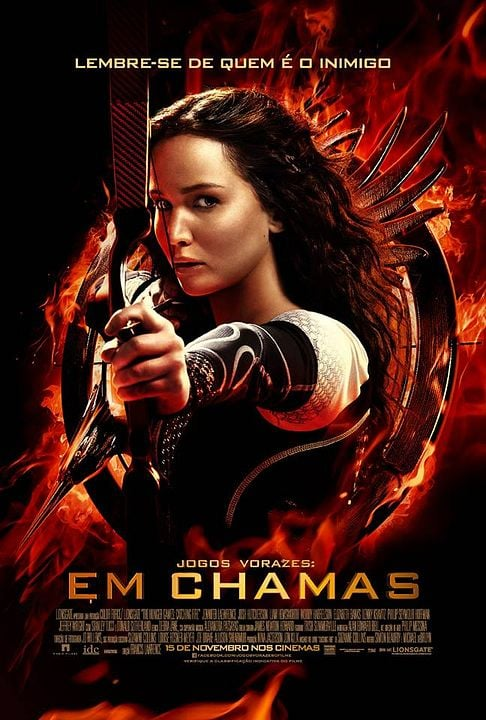
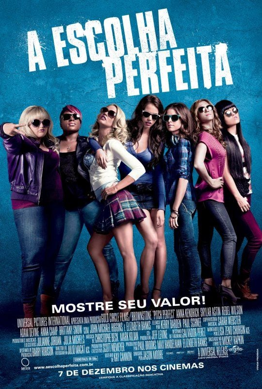
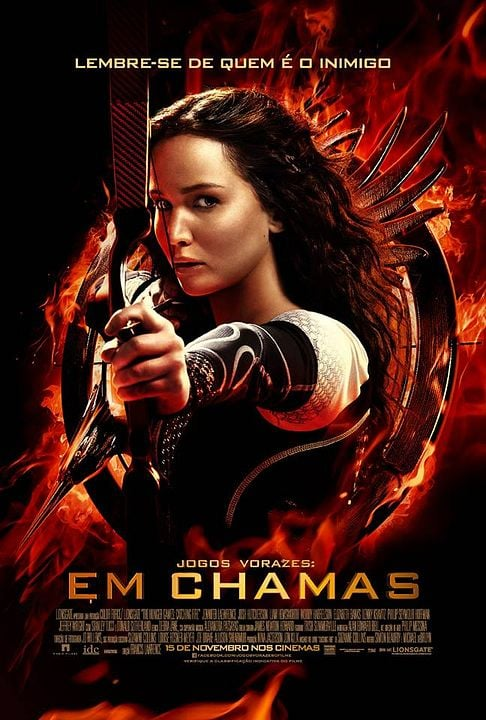
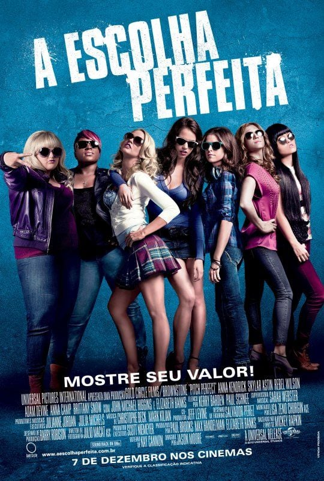

Acadêmico 🎓
Para começar a falar sobre mim, eu quero começar falando sobre a minha vida acadêmica. Isso porque o acadêmico
sempre foi algo muito importante para mim. Desde criança, sou muito dedicada aos estudos. Minha mãe sempre
comenta como, desde muito nova, me tornei autodidata e estudava sozinha sem a necessidade da ajuda de um adulto,
principalmente quando se tratava de matemática, que por algum motivo eu sempre amei. Isso fez com que, na
adolescência, eu decidi fazer um curso técnico integrado ao ensino médio, e foi assim que acabei cursando Mecatrônica.

Fui aluna do instituto federal durante 5 anos, e essa foi uma experiencia muito única na minha vida, o curso técnico
e os professores me fizeram sair da minha zona de conforto inumeras vezes (entre elas temos: atuar em um curta, me tornar
a vilã em uma telenovela, criar e apresentar uma coreografia de ginástica ritmica, entre outras muitas coisas). Além do
próprio curso técnico em Mecatrônica, que não é uma área nada fácil e tipicamente dominada por homens, apesar disso eu gostava
muito, e por isso quase fui para a área de Engenharia de Controle e Automação.
Depois de sair do IF, eu vim para o CIN, desisti da Engenharia, percebi que gostava mais de Computação e agora estou aqui,
vivendo muitos desafios e aprendendo muito também. E, infelizmente, estou de novo em um curso dominado pelos homens.
Cadê as mulheres nas áreas de Exatas??

 


